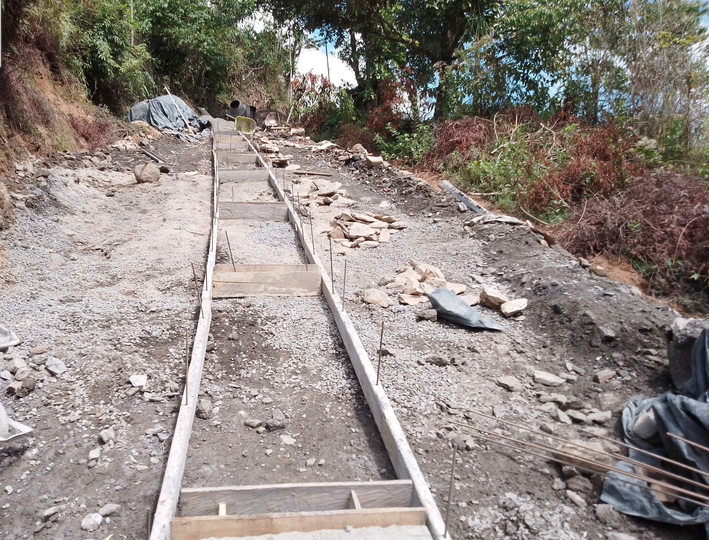
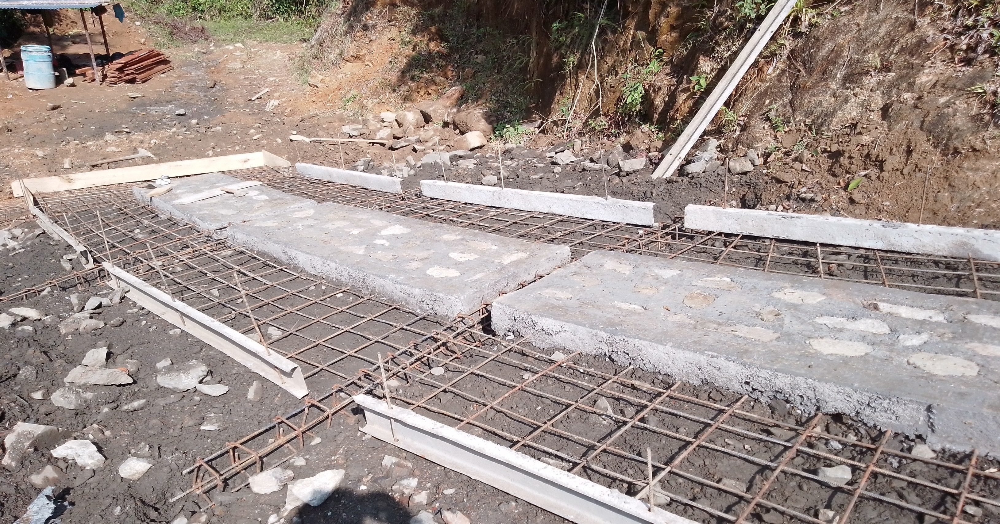
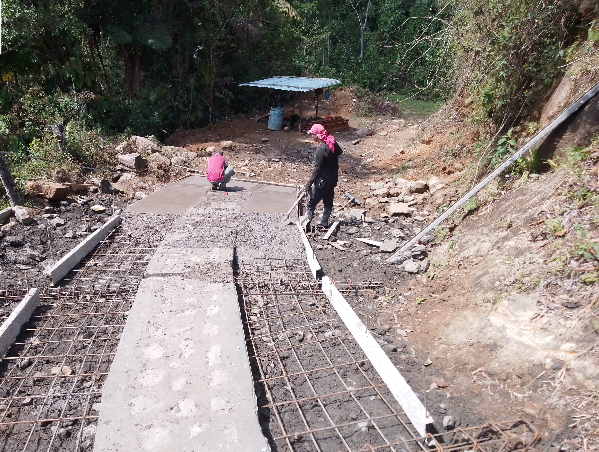
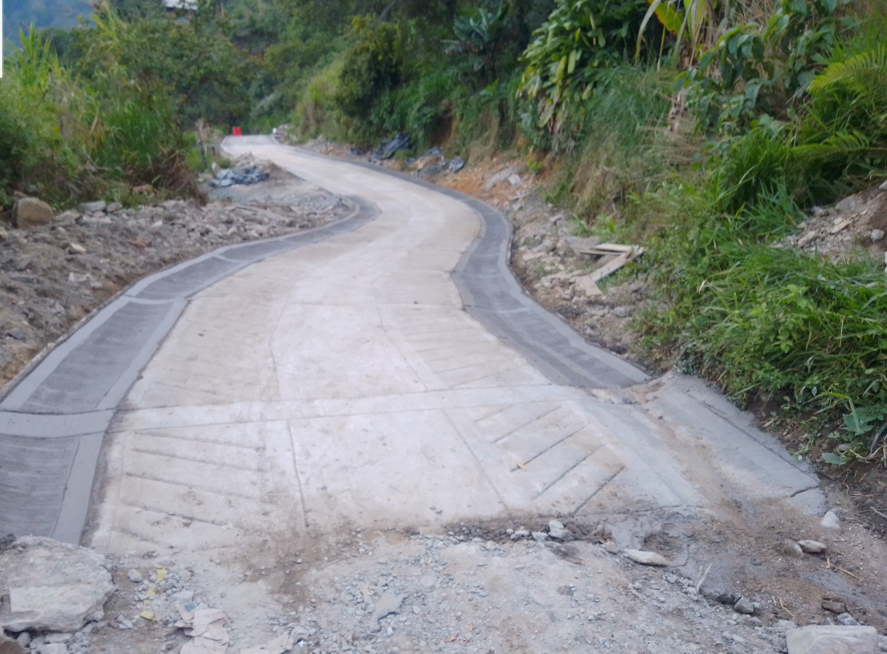

El proceso de construcción de una placa huella comienza con la preparación del terreno. Una vez aplicada la capa de base granular, que asegura una superficie uniforme y resistente, se procede con el armado y vaciado del "centro piedra". Este elemento de concreto ciclópeo, como se observa en la imagen, es fundamental para la estabilidad y durabilidad de la placa huella.

Una vez que el centro piedra ha fraguado, se inicia la construcción de los rieles. Esta fase comienza con el figurado del acero de refuerzo, tanto para los rieles longitudinales como para las vigas riostras transversales. Este proceso es crucial para garantizar la resistencia de la estructura a las cargas del tráfico.

Con el acero de refuerzo en su lugar, se procede al vaciado del concreto para los rieles. Se debe asegurar un correcto vibrado y curado del concreto para obtener la resistencia deseada. Posteriormente, se construyen las cunetas, que son esenciales para el manejo de las aguas lluvias y la protección de la estructura de la placa huella.

Finalmente, se realizan los acabados finales, como el texturizado de la superficie de los rieles para mejorar la adherencia de los vehículos. Una vez que el concreto ha alcanzado la resistencia adecuada, la placa huella está lista para ser puesta en servicio, mejorando significativamente la transitabilidad de la vía.